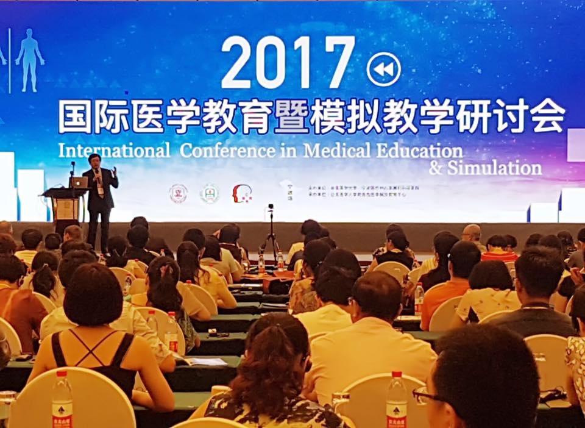
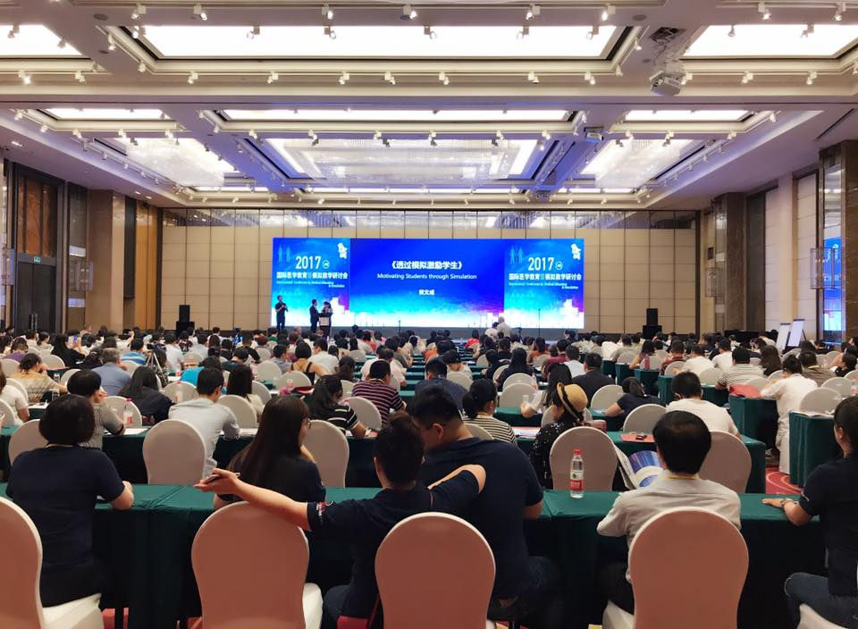

International Medical conference
Home > News > Center activities
張貼人：網站管理者 ╱ 公告日期：2017-08-05
2017醫學教育暨模擬教學研討會(寧波場)

用實戰經驗 傳授教學心法
寧波場的2017國際醫學教育暨模擬教學研討會：美國、新加坡、兩岸講師群，邁入中國第二年。
醫學教育已從知識的教授，延伸到知識的應用，著重臨床的勝任力培養，因此臨床帶領跟模擬環境下的學習，是很重要的一環，鑑於當前臨床教學與模擬教育師資的培育需求，期待藉由研討會的學習，讓臨床帶教師資能增進教學技巧，蓄積教學能量，啟發教學思維。
本次研討會特邀國際醫學教育專家來講授如何增進臨床帶教能力，讓教師們能得心應手地帶教。我們這次會議主題圍繞五個重點：
一、病人安全模擬與評估；
二、模擬認證規範與評估；
三、師資發展與教學技巧；
四、模擬腳本設計與評估；
五、模擬教學與學生學習的激勵。
因此今年特別延請多位美國、新加坡以及來自台灣地區的醫學教育專家，藉由其不同專業不同領域不同文化的碰撞，異中求同地總結出臨床教學跟模擬教育的理念、精神與技巧。今年的研討會將讓從事醫學模擬教學的同行能在醫學教育與模擬教學的創新和發展之間有更多的認識；把握中國臨床教學現狀，深度了解模擬教學所帶來的新挑戰和新機遇。同時，也是難得的與各地富有經驗的專家以及同仁交流學習機會。
